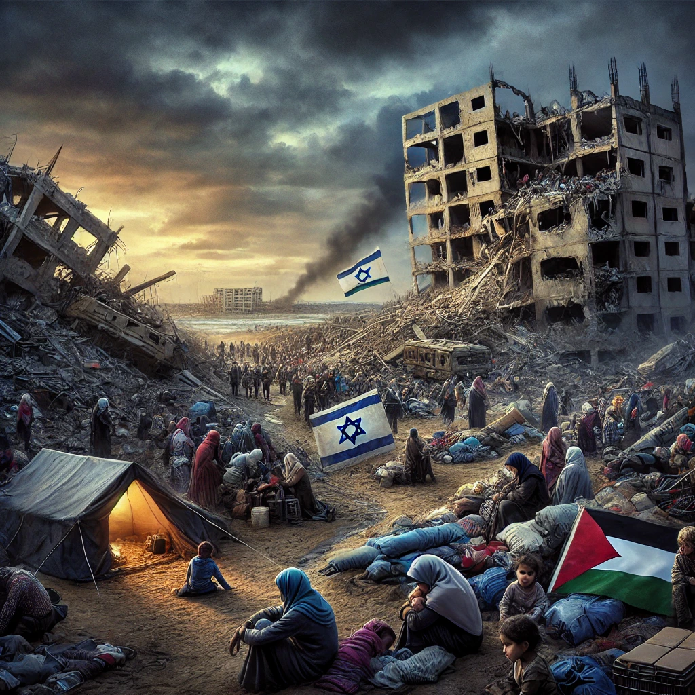

Publicado em 2025-02-11 23:15:25
O conflito entre israelitas e palestinianos é uma das disputas mais antigas e complexas do mundo moderno. A 7 de outubro de 2023, o grupo Hamas lançou um ataque sem precedentes contra Israel, resultando em uma resposta militar massiva que devastou a Faixa de Gaza. Este episódio, um dos mais sangrentos da história recente da região, reacendeu o debate sobre a legitimidade da resistência, os limites da retaliação e o futuro de ambos os povos.
Na manhã de 7 de outubro, combatentes do Hamas atravessaram a fronteira de Gaza para Israel, invadindo comunidades, bases militares e até um festival de música. O ataque foi brutal e chocante: mais de 1.200 pessoas foram assassinadas, incluindo civis, crianças e idosos. Além disso, o Hamas sequestrou mais de 200 pessoas, levando-as para Gaza como reféns.
Este ataque foi amplamente condenado pela comunidade internacional. Muitos países, incluindo os Estados Unidos, a União Europeia e o Reino Unido, classificaram-no como um ato de terrorismo, reafirmando que o Hamas não representa o povo palestiniano, mas sim uma ideologia extremista que não reconhece a existência de Israel e usa métodos violentos para alcançar os seus objetivos.
A resposta israelita foi rápida e brutal. O governo de Israel, liderado por Benjamin Netanyahu, declarou guerra ao Hamas e lançou uma ofensiva militar de larga escala contra a Faixa de Gaza. Bombardeamentos intensos atingiram bairros residenciais, hospitais, escolas e infraestruturas essenciais. Em poucos meses, grande parte de Gaza foi reduzida a escombros.
O número de mortos palestinianos ultrapassou dezenas de milhares, incluindo milhares de civis. Mais de 1,2 milhões de pessoas foram forçadas a fugir das suas casas, vivendo agora em condições precárias, em tendas, buracos ou edifícios destruídos. A falta de alimentos, água potável e assistência médica criou uma crise humanitária sem precedentes.
A resposta de Israel gerou críticas internacionais. Enquanto muitos reconhecem o direito de Israel a defender-se, a escala da destruição levantou questões sobre o uso desproporcional da força. Organizações como a ONU alertaram para possíveis crimes de guerra e pediram um cessar-fogo imediato para evitar mais sofrimento civil.
A situação atual levanta questões morais e políticas profundas. O Hamas, embora reivindique estar a lutar pela libertação da Palestina, utiliza métodos inaceitáveis, como ataques a civis e sequestros. Por outro lado, a resposta de Israel, ao visar a eliminação total do Hamas, tem causado uma destruição que afeta milhares de palestinianos inocentes.
A tragédia deste conflito reside no facto de que a população civil, tanto em Israel como em Gaza, paga o preço das decisões de grupos políticos e militares. O sofrimento humano ultrapassa as justificações políticas e expõe a necessidade urgente de uma solução que garanta segurança e dignidade para ambos os povos.
A história mostrou que a violência apenas perpetua o ciclo de ódio e vingança. Para que haja uma verdadeira mudança, é necessário um compromisso político real de ambos os lados. O reconhecimento mútuo, a criação de um Estado palestiniano viável e a garantia de segurança para Israel são passos fundamentais.
A comunidade internacional tem um papel crucial a desempenhar, pressionando por negociações e cessar-fogos, e garantindo ajuda humanitária a Gaza. No entanto, enquanto grupos extremistas continuarem a ter influência e os líderes políticos apostarem em soluções militares, a paz permanecerá um ideal distante.
O que aconteceu a 7 de outubro e os meses seguintes são um reflexo da falência de um processo de paz que já dura décadas. Se nada mudar, o ciclo de violência continuará, com novas gerações a crescerem sob o medo e o ódio. O desafio é romper este ciclo e construir um futuro onde israelitas e palestinianos possam coexistir em segurança e dignidade.
Francisco Gonçalves
imagem gerada pelo ChatGPT (c)